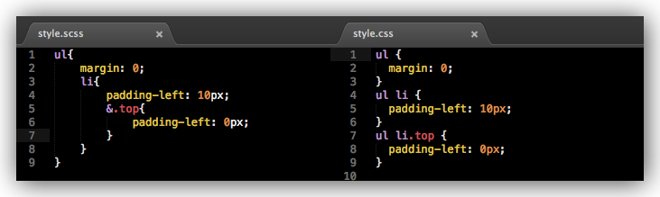
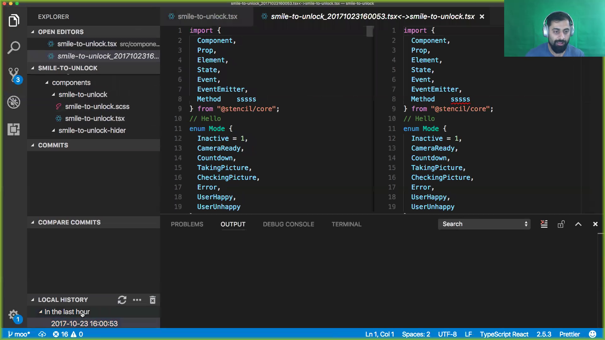
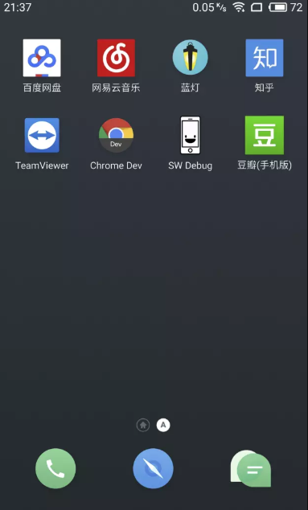
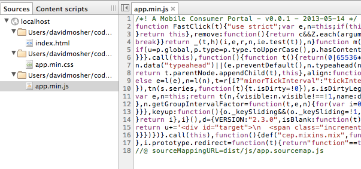

前端工程师必备技能图

浏览器
- IE6/7/8/9/10/11 Edge(Trident)
- Firefox(Gecko)
- Chrome/Chromium(Blink)
- Safari(WebKit)
- Opera(Blink)
页面开发
- HTML/HTML5
- CSS/CSS3
- pug/ejs（HTML预处理器）
- Sass/LESS/Stylus（CSS预处理器）
- PhotoShop/GIMP/Sketch
pug和HTML
body
h1 Jade - node template engine
<body>
<h1> Jade - node template engine </h1>
</body>
scss和css
编程语言
- JavaScript/Node.js
- CoffeeScript（Javascript的转译语言）
- TypeScript（JavaScript的超集，加入静态类型）
- WebAssembly（各大佬公司加入，前景可观）
- 1994年网景公司Brendan Eich用10天实现的
- Node.js于2009年写成，基于Google的V8
- 本质都是在补坑

开发工具
- 编辑器和IDE
- Visual Studio Code（微软开源的神器）
- WebStorm（JetBrains开发）
- 其他
- 调试工具
- Chrome Dev Tools（浏览器自带）
- Firebug（Firefox专用）
- 版本管理
- Github/Gitlab/Bitbucket
- Git/SVN/Mercurial
vscode
前端标准/规范
- HTTP/1.1
- HTTP/2（性能大幅提高）
- ECMAScript6/7（传说中的ES6新标准）
- CommonJS Modules/AMD（Node.js的模块化标准）
- HTML5/CSS3
- W3C:DOM/BOM/XHTML/XML/JSON/JSONP
前端库/框架
- 框架
- jQuery
- AngularJS
- Angular（引入TypeScript，生态完整，Google）
- React（视图层，配合Redux使用，Facebook，React Native、VR）
- Vue（视图层，阿里的Weex，尤雨溪）
- 样式库
- Bootstrap（Twitter）
- Material Design（Google），Demo
- NodeJS框架
- Express（TJ大神作品）
- Koa（TJ大神作品）
编程知识储备
- OOP/AOP
- 原型链/作用域链
- 闭包
- 设计模式
- SEO，客户端渲染和服务端渲染
移动Web
- HTML5/CSS3
- jQuery Mobile
- 响应式布局设计，Demo
- PWA（渐进式网页应用，Google）
- 小程序（腾讯）
PWA示例

代码组织
- 类库模块化
- CommonJS/AMD
- 包管理机制
- bower（专为前端设计）
- npm（伴随Node.js）
可视化
网络安全
- CSRF/XSS（跨站请求伪造和跨站脚本）
- Same-origin policy（跨域解决方案 JSONP,CORS）
部署流程
- 压缩合并
- UglifyJS（丑化代码）
- mincss（压缩代码）
- 文档输出
- JSDoc
- 项目构建工具
- Grunt（任务式打包）
- Gulp（流式打包）
- Yeoman（脚手架）
- webpack（模块打包器）
- babel（ES6转换器）
uglify和mincss
代码质量
- 单元测试
- Mocha（做单元测试）
- Coding style
- JSLint（JavaScript编码标准提示）
- CSSLint（CSS编码标准提示）
- 数据生成
- Mock.js（生成随机数据）